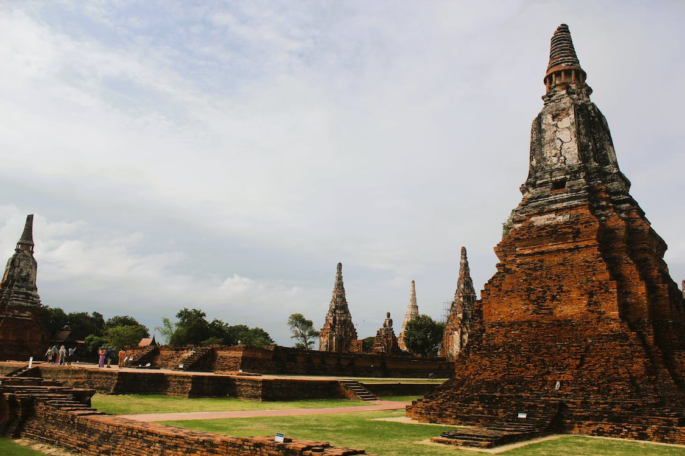

Religions et croyances Environ 94 % de la population est bouddhiste, moins de 5 % musulmane – surtout dans le sud du pays –, 1 % chrétienne et 0,5 % animiste. Le bouddhisme occupe une place centrale dans la vie sociale et politique thaïlandaise.
Proportionnellement, il doit y avoir plus de temples en Thaïlande que d’églises à Rome.
Le roi et la famille royale : ils sont très respectés. Si, l'hymne national retentit en pleine rue, si le portrait royal apparaît au cinéma avant le film, il faut se lever.